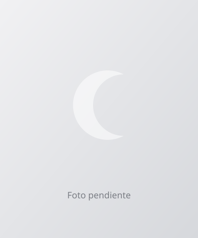
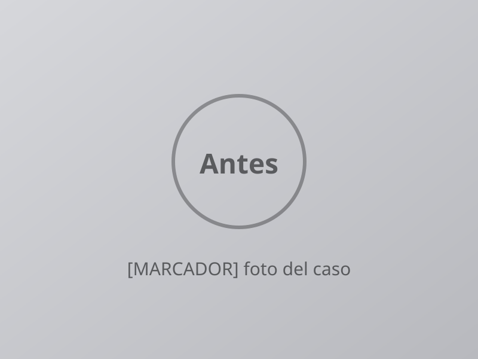
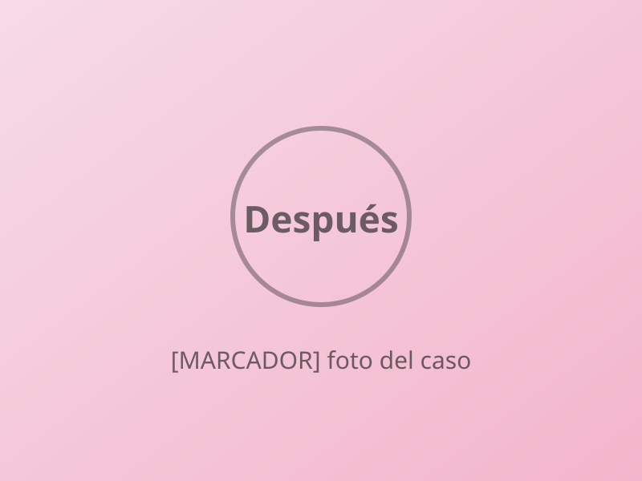

Dr. Fabián Solís
Odontología [CONFIRMAR especialidad y universidad]
Con más de 25 años de experiencia en odontología, junto a la Dra. Garcés se ha encargado de cuidar la salud buco-dental de sus pacientes.
Agenda abierta · pide tu cita en línea
Más de 25 años de experiencia cuidando la salud buco-dental de sus pacientes. Eliges tu cita en un minuto y te confirmamos por WhatsApp.

Elige la que necesitas y sigue a la agenda: la doctora confirma contigo el plan, el precio y la duración en tu valoración.
Cuéntanos qué te trae y te sugerimos por dónde empezar. No es un diagnóstico: lo confirma la doctora en tu cita.
Cuatro pasos y listo. Pides tu cita aquí y el equipo te escribe por WhatsApp para confirmar la hora exacta.
Sabemos que ir al dentista a veces da nervios. Por eso queremos que sepas qué va a pasar antes de sentarte en el sillón.
En tu valoración conversamos sobre lo que te preocupa y lo que esperas, antes de empezar cualquier tratamiento.
La doctora revisa tu caso y te cuenta qué alternativas tienes, con palabras claras.
Recibes el presupuesto por escrito y decides con calma. No empezamos nada sin tu aceptación.
Conoce a quienes cuidan tu sonrisa.
Odontología [CONFIRMAR especialidad y universidad]
Con más de 25 años de experiencia en odontología, junto a la Dra. Garcés se ha encargado de cuidar la salud buco-dental de sus pacientes.
Odontología [CONFIRMAR especialidad y universidad]
Con más de 25 años de experiencia en odontología, junto al Dr. Solís se ha encargado de cuidar la salud buco-dental de sus pacientes.
Conversamos y revisamos tu caso.
La doctora te explica qué necesitas y en qué orden.
Recibes los valores por escrito, sin compromiso.
Empezamos cuando tú decides y te acompañamos en los controles.
Arrastra la línea para comparar.


Casos reales de pacientes, publicados con su consentimiento. Los resultados varían en cada persona.
Casos reales de pacientes, publicados con su consentimiento. Los resultados varían en cada persona.
Cuéntale a la doctora lo que te preocupa: lo conversan antes de empezar y se hace lo posible para que estés cómodo. Cada caso es distinto.
Depende de cada caso. En la valoración la doctora te explica las opciones y recibes el presupuesto antes de empezar.
Sí, entre nuestras áreas está la odontopediatría. Al pedir la cita marca «La cita es para un menor de edad» y escribe el nombre de quien lo autoriza.
Odontopediatría, ortodoncia, estética dental, implantes, prótesis y cirugía oral.
Es una valoración: conversamos, revisamos tu caso y te explicamos las opciones. No empezamos ningún tratamiento sin tu aceptación.
Envías tu solicitud desde esta página con tu día y horario preferidos. El equipo te escribe por WhatsApp para confirmar la hora exacta.
[MARCADOR: teléfono de la clínica]